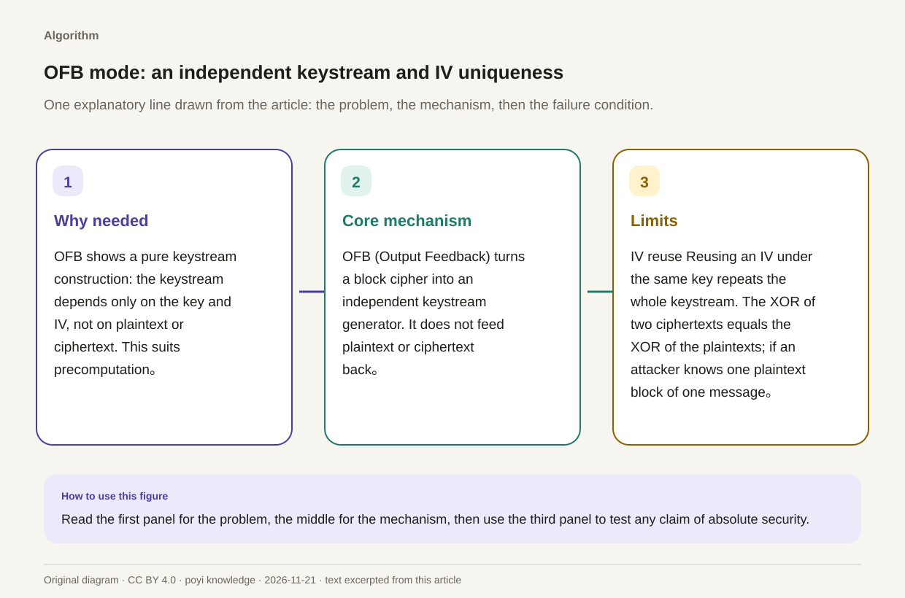
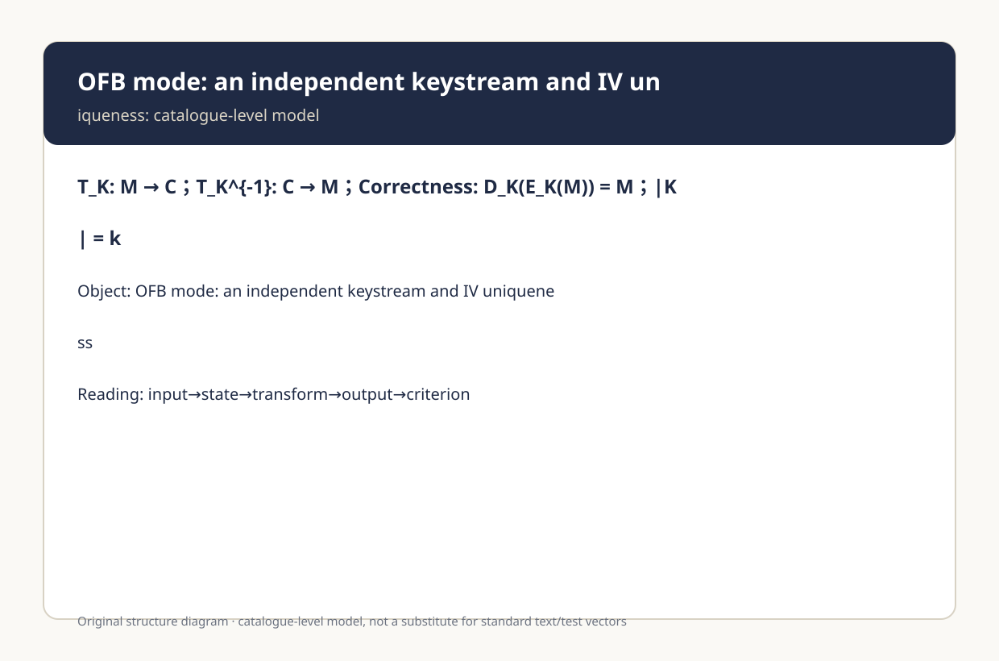

Principles
Algorithm: Output Feedback (OFB 输出反馈模式). OFB (Output Feedback) turns a block cipher into an independent keystream generator. It does not feed plaintext or ciphertext back; instead it repeatedly encrypts the previous output block:
I_1 = IV
I_j = O_(j-1) (j >= 2)
O_j = E_K(I_j)
C_j = P_j xor O_j
Decryption uses the same keystream:
P_j = C_j xor O_j
OFB uses only forward E_K and needs no D_K. Encryption and decryption are the same XOR operation; given the IV and key, the keystream is independent of message content, so output blocks can be precomputed before plaintext or ciphertext arrives. The OFB IV must be a nonce: under one key, every execution must use a unique value. The standard does not require the OFB IV to be unpredictable like a CBC IV; it requires non-repetition. Reusing an IV makes two messages share the same keystream segment and directly leaks the XOR of their plaintexts. OFB output blocks depend on the previous output block, so forward E_K cannot run in parallel; output blocks can still be precomputed serially before data arrives. OFB allows a partial final block, using the first u bits of the output block and XORing with the remaining plaintext, so it needs no block padding. OFB does not change the underlying block size or key length.

Why it matters
OFB shows a pure keystream construction: the keystream depends only on the key and IV, not on plaintext or ciphertext. This suits precomputation, stream-like processing and settings without block padding, and it makes the security boundary very clear: the IV must be unique.
OFB differs from CFB in what is fed back. CFB feeds ciphertext, so its keystream depends on the message; OFB feeds output blocks, so its keystream is independent of the message. This determines error propagation, parallelism and IV requirements: OFB has no ciphertext-feedback error propagation, but IV reuse directly repeats the whole keystream.
Understanding OFB also helps explain CTR and AEAD: both turn a block cipher into keystream, but CTR uses an explicit counter while OFB iterates a permutation; CTR supports random access, while OFB keystream must be generated in order.
Applications
OFB is a general confidentiality mode for stream-like processing, keystream precomputation or settings without block padding. SP 800-38A addresses protection of sensitive information by federal agencies and non-government organizations, and OFB is one of its defined modes.
When the keystream can be generated before the message arrives, OFB suits latency-sensitive or irregular data arrival. But precomputation assumes the IV is fixed and unique. Treating the ability to precompute as licence to reuse the IV turns OFB's advantage into a disaster.
OFB provides no integrity. When authentication is needed, use AEAD or add a MAC; an independent keystream does not make it tamper-resistant.

Limits & attacks
Reusing an IV under the same key repeats the whole keystream. The XOR of two ciphertexts equals the XOR of the plaintexts; if an attacker knows one plaintext block of one message, the corresponding output block can be derived from its ciphertext and used to recover the other message's plaintext at that position. SP 800-38A warns explicitly that repeated IVs may compromise the confidentiality of those messages.
The OFB IV is the first input block. If one message's IV happens to equal an input block produced while encrypting another message, the keystreams overlap and confidentiality may be compromised. IV uniqueness therefore means not only distinct IVs across messages but also avoiding overlap with other input blocks under the same key.
OFB provides confidentiality only, not integrity. Flipping one ciphertext bit flips the same plaintext bit, and an attacker can make controlled modifications; OFB cannot detect them.
OFB output blocks depend one after another, so forward E_K cannot run in parallel. Precomputation can hide latency, but it cannot provide CTR-style random access to arbitrary blocks.
This article's teaching implementation demonstrates only AES-128-OFB official vectors, IV reuse relations and partial-block handling. It does not implement secure IV generation, constant-time processing, key management, protocol state machines or side-channel defenses, and it must not be used in production.
History
In 1980, FIPS 81 defined OFB for DES, letting a block cipher generate a keystream independent of the message. In 2001, SP 800-38A generalized OFB to block ciphers and supplied AES test vectors.
OFB's long use shows that a keystream independent of the message is both an advantage and a risk: it enables precomputation and stream-like processing, and it turns IV reuse directly into keystream reuse. CTR later strengthened uniqueness and random access with an explicit counter, and AEAD added integrity to the same operation.
This history shows that OFB is a basic mode with a clear boundary: generate a unique IV, accept serial keystream generation and provide integrity separately, and it can provide confidentiality; omit those preconditions and the mode's properties become an attack surface.
Worked example & verification
Worked example
Take one published or standard test vector, record the input, the ordered steps and the byte-exact output, then compare with an independent implementation. Where no citable numeric vector is available, the entry records only structural steps and does not invent an output.
References
- Wikipedia search entry for OFB 输出反馈模式. https://zh.wikipedia.org/w/index.php?search=OFB%20%E8%BE%93%E5%87%BA%E5%8F%8D%E9%A6%88%E6%A8%A1%E5%BC%8F
- Handbook of Applied Cryptography (Menezes, van Oorschot, Vanstone). https://www.cacr.math.uwaterloo.ca/hac/